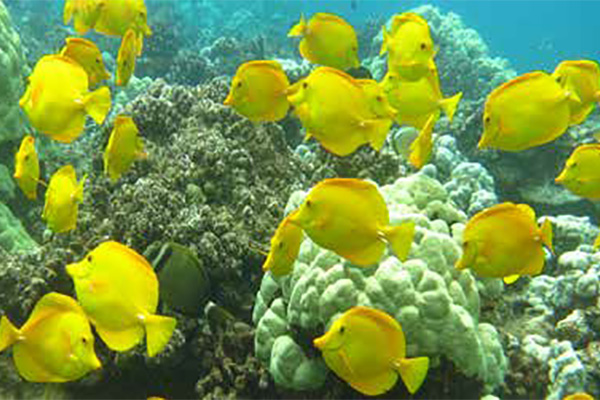
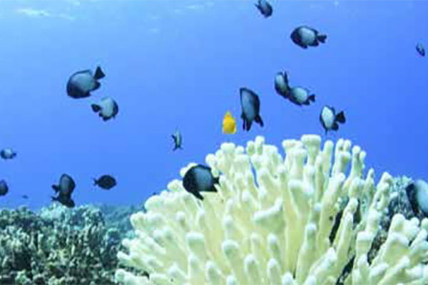
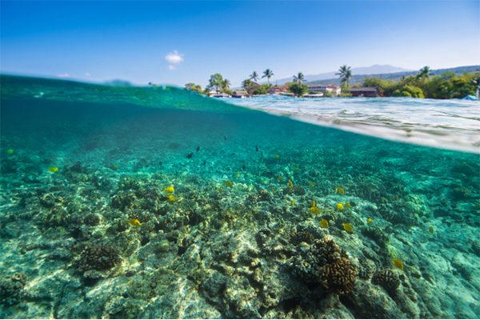

West Hawai'i - Ecosystem Status Report
West Hawai'i is a dynamic and productive ecological region that is home to a diverse group of marine organisms including tropical corals and reef fishes, sea turtles, manta rays, dolphins, and whales. The West Hawai'i Integrated Ecosystem Assessment (IEA) is a holistic, ecosystem-based approach to research aimed at understanding the key societal and ecological linkages that shape West Hawaii's marine ecosystems. By combining place-based knowledge and information from local community members, scientists, and resource managers, the West Hawai'i IEA represents a synergistic and cross-disciplinary program focused on local management concerns in West Hawai'i.
DID YOU KNOW?
Growing pressures from an increasing human population and a rapidly changing climate are threatening Hawaii's marine ecosystems. With an integrated ecosystem assessment, we can develop adaptive management strategies that support the sustainable delivery of ecosystem services while maintaining the health and vitality of the region's marine resources.
WHY CARE?
West Hawai'i has a thriving ecological system with the largest expanse of intact coral reef ecosystem in the state. The region serves an important role for traditional cultural practices, commercial and non-commercial fisheries, recreation, tourism, coastal protection, and many other ecosystem services essential to the local community.
Report Highlights
Yellow Tang and Fish Recovery Areas

Over 70% of the state's aquarium fish industry occurs in West Hawai'i with juvenile yellow tang comprising nearly 85% of the total catch. Dramatic declines in yellow tang and other aquarium species triggered the establishment of Fish Replenishment Areas (FRAs); a network of protected areas closed to aquarium fishing along West Hawai'i in 1999. Over an 8-year period, juvenile yellow tang were five times greater inside FRAs compared to open areas. And in recent years, juvenile yellow tang have increased up to 400% across the region.
Coral Bleaching 2015

In 2015 the ocean was hot. Sea surface temperatures reached 2.5°C (4.5°F) above typical summertime temperatures and resulted in the first widespread coral bleaching event in West Hawai'i. The overall severity of bleaching, or the percentage of corals bleached at a given location, ranged from 30–80% with some geographic areas exhibiting upwards of 90% coral bleaching. Coral bleaching does not necessarily result in coral mortality; however, local human pressures such as excess nutrient input and removal of herbivores fishes can imped their ability to recover. Effective management strategies that mitigate human related pressures can promote coral recovery and increase the resiliency of corals to future coral bleaching events.
Making the Ecosystem Status Report
The ocean off the west coast of Hawai'i Island is home to an especially vibrant marine ecosystem. This coastal region is teeming with bright fish, sea urchins and shellfish, green sea turtles, spinner dolphins, whales, manta rays, and coral reefs. West Hawai'i has the largest expanse of intact and actively growing coral reef in all of the main Hawaiian Islands [1]. This wide array of flora and fauna makes West Hawai'i incredibly important for marine biodiversity but also particularly vulnerable to the pressures of an increasing human population, coastal development, fishing, pollution, and climate change.